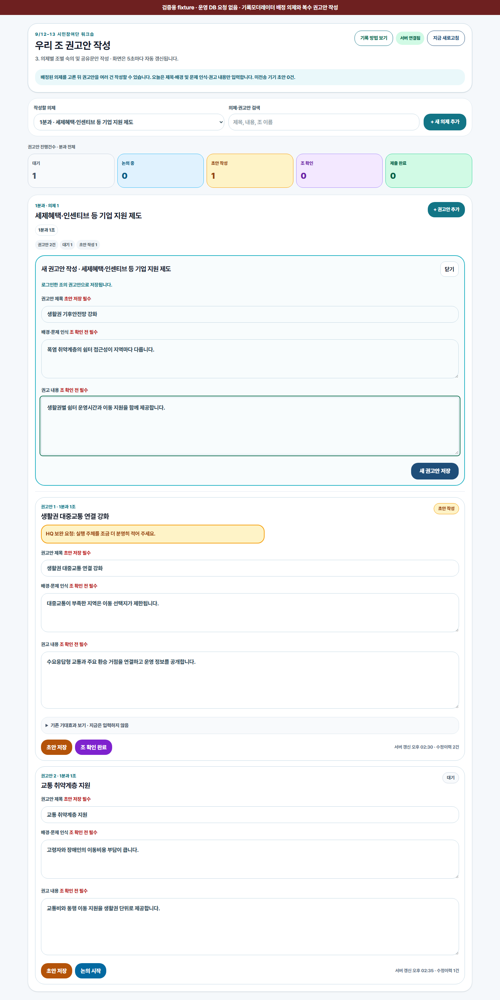
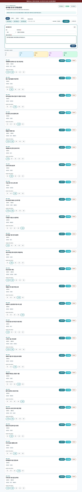

9/12–13 현장용
권고안 작성·진행상황판 사용 가이드
기록모더레이터는 자기 조 권고안 카드를 작성하고 HQ는 모든 분과를 확인·지원합니다. 1분과의 9/12 저녁 발표는 주제명, 문제·배경, 기대효과를 완성된 문장으로 정리하고 초안 저장합니다. 권고 내용은 오늘 발표 필수가 아니며 조 확인·최종 제출은 이후 권고안 완성 절차입니다. 2·3분과는 기존 작성 기준과 각 분과 진행 안내를 따릅니다.
의제 수1분과 9개 · 2분과 8개 · 3분과 8개
카드 단위권고제목 하나마다 권고안 카드 한 장
작성 범위제목 · 문제인식 · 권고내용까지만
🗓️
현장 일정
오늘·내일 무엇을 작성하는지
9월 12일(토) · 오늘
14:45–15:45 배경·문제인식 → 16:15–17:00 기대효과 → 17:00–18:00 권고제목 → 19:00–20:00 분과 간 공유
9월 13일(일) · 내일
09:10–12:00 구체적인 정책 제안 → 13:00–14:15 권고내용 정리·이행 일정 → 14:30–15:30 중복 확인 → 15:45–16:45 분과 권고안 통합
정본: 「0. 기후시민회의 제6-7차 회의 추진계획안_취합.hwpx」 붙임 세부일정표·상세 운영 계획. 권고수준(상·중·하)은 8차에서 작성합니다.
📝
기록모더레이터
자기 조 권고안 작성하기
- 분과·조 확인로그인 뒤 표시된 분과와 조가 현장 배정과 같은지 확인합니다.
- 의제 선택자기 분과 전체 의제(1분과 9개, 2·3분과 각 8개)에서 논의할 의제를 고릅니다.
- 권고안 카드 추가권고제목 하나마다 카드 한 장을 만들고 문제인식과 권고내용을 이어 씁니다.
- 초안 저장작성 중 수시로 저장하고 마지막 서버 갱신 시각을 확인합니다.
- 조 확인세 입력칸을 조원과 읽고 합의된 카드만 조 확인 완료로 넘깁니다.
- 최종 제출제출 완료 배지와 분과 현황판 반영을 확인합니다.

제출 전 20초 점검
- 내 분과·조·의제가 맞다.
- 권고제목 하나당 카드가 한 장이다.
- 제목·문제인식·권고내용이 모두 채워졌다.
- 제출 완료 배지가 보인다.
🎛️
책임모더레이터 · HQ
전체 분과 확인하고 지원하기
- 전체 25개 확인전체 및 분과 탭의 9·8·8 건수를 확인합니다.
- 분과·상태 필터분과나 상태를 골라 지연·보완 대상 조를 찾습니다.
- 대신 입력·수정대상 분과·조·의제를 확인한 뒤 권고안 카드를 작성합니다.
- 보완 요청보완 내용을 구체적으로 남기고 필요한 경우 재열기합니다.
- 분과 화면 송출분과별 현황 송출로 조별 권고제목과 진행상태를 크게 보여줍니다.

HQ 대신 입력 시
저장 전에 대상 분과·조·의제를 다시 확인하세요. 대상 조와 입력 행위자가 이력에 함께 남습니다.
5
공통
상태는 이렇게 바뀝니다
- 대기새 카드 저장
- 논의 중논의 시작
- 초안 작성초안 작성 완료
- 조 확인조 확인 완료
- 제출 완료최종 제출
상단 색상 박스는 진행 건수입니다. 기록모더레이터는 개별 카드의 다음 행동 버튼으로 상태를 바꾸고 HQ는 색상 박스를 필터로 사용합니다.
막혔을 때
- 의제가 9·8·8보다 적어요
- 새로고침 후에도 같으면 입력하지 말고 HQ에 분과·조를 알려주세요.
- 저장됐는지 모르겠어요
- 연결 상태와 마지막 갱신 시각을 확인하고 버튼을 여러 번 누르지 않습니다.
- 잘못 제출했어요
- HQ에 재열기를 요청하고 기존 카드를 수정합니다. 같은 카드를 다시 만들지 않습니다.